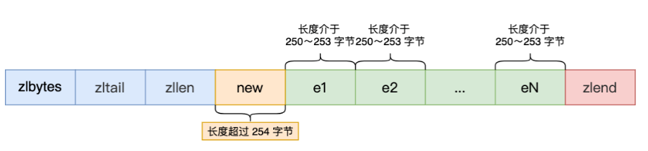

《REDIS》备忘录
本文用于记录 Redis 相关知识，以备查阅。
01 Redis 数据结构
Redis 数据类型是其值的数据类型，这些数据类型会使用相应的数据结构来实现，对应关系如下：

Redis 本身使用了哈希表来保存所有的数据，哈希桶存放的是键值对的指针，指针的类型都通过对象结构来解码，里面包含了 type，encoding，ptr 等信息，整个映射过程如下：

SDS：保存为 (len, alloc, flags, buf[]) ，其有以下优点：常量时间复杂度内获取字符串长度，二进制安全，不会发生缓冲区溢出，节省内存空间，另外为了节省空间，使用了 __attribute__ ((packed))
双向链表：实现为具有头节点的双向链表，能够快速获取到头尾节点和链表长度等信息，但是存在无法很好利用 CPU 缓存和在数据较小时，内存开销较大的问题
压缩列表：内存紧凑型的数据结构，占用一块连续的内存空间，不仅可以利用 CPU 缓存，而且会针对不同长度的数据，进行相应编码，节省内存空间。但是其不能保存过多的元素，并且新增或者修改元素时，可能引发连锁更新的问题（通过 prevlen 长度改变造成）
哈希表：内部保存有两张哈希表，采用链式哈希来解决哈希冲突，当 Redis 中的数据过大时，此时就会进行 rehash，其采用的是渐进式 rehash，即在 rehash 进行期间，每次哈希表元素进行查找或者删除操作时，Redis 除了会执行对应的操作之外，还会顺序将哈希表 1 中 rehashidx 位置上对应的桶中的 key-value 迁移到哈希表 2 上，rehash 触发条件和负载因子有关
整数集合：包含有 (enconding, length, contents) 信息，当 Set 对象只有整数，并且元素数量不大时，就会采用该数据结构，当新的数据远大于已存在的数据时，会执行升级操作，升级后不会降级
跳表：在 Redis 中只有 Zset 对象底层同时使用了两个数据结构，一个是哈希表，一个就是跳表。跳表实际上是多层的有序链表，通常越高层的跨度越大，跨度还有一个作用，就是计算该节点在跳表中的排位，Redis 实现中，为跳表增加了一个表头，其中有头尾节点，表长度和最大层数等信息，在新增节点的时候，会随机生成每个节点的层数，每层高度晋升机会是 0.25，得到的跳跃表更加扁平
quicklist：3.2 版本后，List 对象的底层数据结构。其实际上就是双向链表和压缩列表的组合，也就是每个链表节点数据元素是压缩列表，为了解决连锁更新的问题，其会控制每个链表节点中的压缩列表的大小或者元素个数（quicklist.fill 属性），也就是降低连锁更新带来的影响
listpack：quicklist 并没有完全解决连锁更新的影响，因为其还是用压缩列表来保存元素。listpack 的目的便是取代压缩列表，其最大不同就是每个内部节点不再包含前一个节点的长度，从而避免了连锁更新

02 Redis 数据类型
Redis 对象中保存了 type 和 encoding 信息，前者表示对象的类型，后者表示使用的编码，通过 void* ptr 指向对应的真实数据类型，对象类型有：
- String 类型：
- 编码：int，raw，embstr
- embstr 表示 redisObject 和 SDS 使用连续的内存空间，适用于字符串较短情况
- raw 则将 SDS 和 redisObject 分离存储，使用内部 ptr 指向 SDS 对象
- 常用指令：SET/MSET，GET/MGET，EXISTS，DEL，INCR/INCRBY，EXPIRE/TTL，SETNX
- 应用场景：
- 缓存对象：缓存对象的 JSON 格式，或将 key 进行组合进行存储，如
user:<id>:name - 常规计数：通过 INCR/INCRBY
- 分布式锁：
SET lock_key unique_value NX PX 10000，unique_value 表示某个客户端独占，设置过期时间方式客户端崩溃而不能及时释放资源，解锁可以通过 DEL 命令实现，但是由于需要先判断该锁是否是自己的锁，为了保证原子性，需要使用 LUA 脚本
- 缓存对象：缓存对象的 JSON 格式，或将 key 进行组合进行存储，如
- 编码：int，raw，embstr
- List 类型：
- 编码：ziplist，linkedlist，quicklist（3.2 版本）
- 常用指令：LPUSH/RPUSH，LPOP/RPOP，LRANGE，BLPUSH/BRPOP
- 应用场景：
- 消息队列：消息队列三要素：
- 消息保序：LPUSH + RPOP，LPUSH + BRPOP
- 重复消息处理：生产者自己实现全局唯一 ID
- 消息可靠性：使用 BRPOPLPUSH
- 消息队列：消息队列三要素：
- Hash 类型：
- 编码：ziplist，hash，listpack（7.0 版本）
- 常用命令：HSET/HGET，HDEL，HLEN，HGETALL，HINCRBY
- 应用场景：
- 缓存对象：field + value 表示对应属性和值，key 则表示对象 id，不过通常使用 String + JSON 方式存储对象，如果对象某些属性变化频繁，可以使用 Hash 类型
- 购物车：以用户 id 为 key，商品 id 为 field，商品数量为 value，构成购物车的 3 个要素
- Set 类型：
- 编码：intset，hash
- 常用命令：SADD，SREM，SMEMBERS，SCARD，SISMEMBER，SINTER，SUNION，SDIFF
- 应用场景：
- 点赞：按照文章 id 为 key，用户 id 为 value
- 共同关注：主要使用交集运算 SINTER，注意集合运算复杂度较高
- 抽奖活动：SRANDMEMBER，SPOP key count
- Zset 类型：
- 编码：ziplist，skiplist 和 hash，listpack（7.0 版本）
- 常用操作：ZADD，ZREM，ZSCORE，ZCARD，ZINCREBY，ZRANGE，ZRANGEBYSCORE，ZRANGEBYLEX，ZUNIONSTORE，ZINTERSTORE
- 应用场景：
- 排行榜，电话姓名排序
- BitMap 类型：
- 实现：使用 String 类型实现，保存为二进制的字节数组
- 常用命令：SETBIT，GETBIT，BITCOUNT，BITOP，BITPOS
- 应用场景：签到统计，判断用户登陆状态，连续签到用户总数
- HyperLogLog 类型：
- 目的：提供不精确的去重计数，误差率大约是 0.81%
- 常用命令：PFADD，PFCOUNT，PFMERGE
- 应用场景：百万级网页 UV 计数
- GEO 类型：
- 目的：存储地理信息，并且对存储的信息操作，用于位置信息服务
- 实现：通过 GeoHash 编码将经纬度转换为 Zset 中元素的权重分数，关键机制在于对二维地图做区间划分和对区间进行编码
- 常用命令：GEOADD，GEOPOS，GEODIST，GEORADIUS
- 应用场景：嘀嘀打车
- Stream 类型：
- 目的：专门为消息队列设计的数据类型，支持自动生成全局唯一 ID，并且以消费组消费数据
- 常用命令：XADD，XREAD，XREADGROUP，XPENDING/XACK
- 消息队列：
- 使用 XADD 会生成全局唯一 ID，如
1654254953808-0，通过 XREAD 实现消息读取，XREADGROUP 可以实现负载平衡 - Stream 会使用 PENDING list 留存消费组里每个消费者读取的消息，直到收到对应的 XACK；消费者可以在重启后，使用 XPENDING 命令查看已经读取，但尚未确认的消息
- 问题：
- Redis 队列中间件（Stream）存在数据丢失的问题，主要原因在于 AOF 先执行命令，再写文件，其次主从复制再进行主从切换时，也存在数据丢失的问题
- 面对消息积压，内存资源紧张
- 使用 XADD 会生成全局唯一 ID，如
03 AOF 日志
AOF 日志：会保存写操作的命令到日志中，需要手动开启，里面保存的就是一条条用户的写命令
Redis 先执行写操作，完成写操作后才将该命令记录到 AOF 日志中，好处有：
- 避免恢复时额外的检查开销
- 不会阻塞当前写操作命令的执行
但是这样的话存在数据丢失的风险，这和 AOF 日志写回硬盘的时机有关（appendfsync）：

当调用 IO write 操作时，操作系统实际上会将数据放在内核缓冲区中，其会等待到一定的时机将数据写到硬盘上，或者通过用户的 fsync 的显式调用将其数据落盘
AOF 重写机制：为了避免日志文件越来越大，对于设置相同的键，其会先创建一个新文件，然后扫描数据库中所有数据，逐一把内存数据的键值对转换成一条命令，再将命令记录到重写日志
AOF 后台重写：AOF 重写过程是通过后台子进程 bgrewriteaof 来完成的，好处有：
- 子进程在 AOF 重写期间，主进程依旧可以响应用户命令
- 子进程带有主进程的数据副本，采用写时复制策略，减少内存开销
- 子进程修改共享内存数据时，直接复制，如果采用线程方式实现，则需要加锁
为了记录重写过程中新到来的指令，存在一个 AOF 重写缓冲区，用于保存重写过程中的用户指令，该 AOF 缓冲区最终将会追加到新的 AOF 文件中，最终原子替换原来的 AOF 日志文件
AOF 缓冲区用于保证即使是在子进程发生故障时仍然能够原来的 AOF 时正确的（按照 appendfsync 策略），AOF 重写缓冲区则保证了子进程在替换原来的 AOF 文件后，上面的文件内容能反映数据库当前的状态

04 RDB 快照
RDB 快照记录的是某个时间点的内存数据，采用的是全量备份，提供了两个命令用来生成 RDB 文件，分别是 save 和 bgsave，前者会阻塞主线程，后者则创建了一个子进程专门生成 RDB 文件。
在执行 bgsave 的过程中，由于采用的是子进程处理，并且采用写时复制技术，当有新的命令到来时，此时原来的主进程会复制一块内存用于修改，而子进程读到的还是原来的数据。当系统宕机时，可能会丢失上次快照到现在时刻的数据。
混合持久化：RDB 数据恢复的速度快，但是存在大量数据丢失的问题，AOF 虽然解决了大量数据丢失的问题，但是在文件很大的时候，恢复过程缓慢，在 4.0 以后，可以通过配置 aof-use-rdb-preamble 使用混合持久化功能，其在 AOF 重写过程时，先将 RDB 数据写入 AOF 文件中，然后追加持久化过程中的 AOF 重写缓冲区里面的内容。
05 主从复制
主从复制可以避免单点故障，主服务可以进行读写操作，并且将写操作同步给从服务器，从服务器一般只读，并且执行主服务器传过来的写操作。
第一次同步过程：使用 replicaof（slaveof） 可以形成主从关系，采用的是全量复制，并且缓存生成 RDB 文件过程中的写操作到 replication buffer 中，之后将其发送给从服务器。

分摊主服务器的压力：在第一次同步过程中，耗时过程主要在生成 RDB 文件和传输 RDB 文件，如果一个主服务器有很多从服务器，可能就会占用大量网络带宽。可以让其中一个服务器成为经理角色，其会同步写操作到其负责的从服务器上。
命令传播：主从服务器完成同步后，双方维护了一个 TCP 连接，该连接是长连接的，这是为了避免 TCP 连接和断开的性能开销。
增量复制：如果主从服务器网络发生断开，之后又重新连接，此时就会根据 psync {runid} {offset} 来进行增量复制。该实现过程通过环形缓冲区 repl_backlog_buffer 实现，主从服务器分别记录自己的 offset，从而实现增量同步，如果从服务器 offset 对应的数据已经被覆盖，则通过全量复制实现，可以通过 repl_backlog_size 设置该环形缓冲区大小。
repl_backlog_buffer：为了从库断开之后，如何找到主从差异数据而设计的环形缓冲区，避免全量复制带来的性能开销
replication_buffer：从库相当于一个 client，和 client 通信所需的缓冲区，在主从复制中特称为 replication_buffer

相关问题：
- 主服务器不进行持久化时复制的安全性：若主服务器没有开启持久化，应该将其配置为避免自动重启，否则自动重启后主节点上只有一个空数据集，并且会复制到其它从节点上
- 为什么全量复制使用 RDB 而不是 AOF：RDB 文件内容相对较小，可以降低网络贷款的消耗，并且其还原数据速度快；另外如果使用 AOF 做全量复制，对文件刷盘策略需要仔细选择，选择不当比较影响性能
- 无磁盘复制模式：Redis 默认使用磁盘复制，但是其性能收到磁盘速度的限制，无磁盘复制模式即创建一个新进程直接 dump RDB 到 slave 的 socket，不经过硬盘，适用于网络较快的情况
- 从库的从库：对于主库来说，如果所有的从库直接连接到主库上，会给主库带来网络和磁盘上的消耗
- 数据过期问题：在主从复制中，从节点不会主动删除数据，而是通过主节点控制从节点来删除过期数据，在 Redis 3.2 后，从节点在读取数据的时候，增加了对数据是否过期的判断（惰性删除）
06 哨兵机制
目的：提供主从节点自动进行故障转移的功能
哨兵节点：运行在特殊模式下的 Redis 服务器，组成哨兵集群，功能是监控，选主，通知
监控：通过 ping 命令判断主从节点是否主观下线，一旦检测到主观下线，就会和其他的哨兵节点协商，达到 quorum 值便可确定其为客观下线
不参与 leader 竞选的节点只有一次投票权，防止出现两个哨兵节点同时观测到主观下线，同时竞选成为 leader 的情况
选主：
在已下线主节点的所有从节点中选取一个从节点，将其当作新的主节点
首先过滤掉网络状态不好的从节点，通过 down-after-millseconds 参数
按照优先级，复制进度，ID 号挑选从节点作为新的主节点
哨兵节点给新的主节点发送 SLAVEOF no one 命令，提高 INFO 命令发送频率
INFO 命令用于获取该节点的角色信息，如其对应的从节点列表等
让已下线主节点的所有其他从节点修改复制目标，修改其为新的主节点
- 哨兵节点给其他从节点发送 SLAVEOF 命令
将新主节点的 IP 地址和信息，通过发布订阅机制通知给客户端
- 客户端和哨兵建立连接后，就会订阅哨兵提供的频道，主从切换完成后，哨兵会向
+switch-master频道发布新的主节点的 IP 和端口，用以通知客户端
- 客户端和哨兵建立连接后，就会订阅哨兵提供的频道，主从切换完成后，哨兵会向
继续监视原来的旧主节点，但这个旧主节点重新上线时，修改其为从节点
哨兵集群：
- 哨兵发现：通过命令
sentinel monitor <master-name> <ip> <redis-port> <quorum>进行哨兵配置，主节点中存在__sentinel__:hello频道，其他烧饼可以通过订阅该频道，用以发现其他哨兵并进行连接 - 从节点发现：通过 INFO 命令，主节点会返回所有的从节点信息
主从集群脑裂现象：
- 产生原因：由于网络问题，导致集群节点之间失去联系，主从节点间数据不同步，哨兵重新选举，产生两个主节点，等待网络恢复，旧主节点会降级为从节点，由于其与新节点进行同步复制的时候，会清空自己的缓冲区，导致之前客户端写入的数据被丢失
- 解决方案：当主节点发现从节点下线或者通信延迟过大时，那么禁止主节点进行写数据，直接把错误返回给客户端，以减少数据丢失，可以通过以下两个参数控制
- min-slaves-to-write x，主节点必须要有至少 x 个从节点连接，如果小于这个数，主节点会禁止写数据
- min-slaves-max-lag x，主从数据复制和同步的延迟不能超过 x 秒，如果超过，主节点会禁止写数据
07 切片集群模式
目的：当 Redis 缓存数据量大到一台服务器无法缓存时，就需要使用切片集群模式，其将数据分布在不同的服务器上，以此降低系统对单节点的依赖，提高读写性能，实际上就是服务器 Sharding 技术
实现：采用哈希槽来处理数据和节点之间的映射关系，一个切片集群共有 16384 个哈希槽，通过 CRC16 和取模实现 key 到哈希槽的映射。哈希槽映射到具体的 Redis 节点：
- 平均分配：Redis 集群平均分配哈希槽
- 手动分配：使用 cluster meet 手动建立节点之间的链接，组成集群，然后通过 cluster addslots 命令进行分配
哈希槽和一致性哈希：
- 哈希槽指的是先将用户数据划分到槽里面，然后将槽划分到不同服务器节点上，可以为不同硬件服务器自定义槽数目大小
- 一致性哈希则是将服务器节点划分在一个哈希环上，主要目的是减少新增节点导致的重新哈希的问题，容易产生数据倾斜问题，可以引入虚拟节点映射减少该问题
08 缓存雪崩、击穿、穿透
Redis 通常用做数据库的缓存中间件，用户先访问 Redis，如果命中直接返回，否则就查询数据库获得数据，并且更新缓存。
缓存雪崩：大量缓存数据在同一时间过期，或者 Redis 故障宕机时，此时大量的请求访问数据库，从而导致数据库压力骤增，严重的会造成数据库宕机，而造成系统崩溃。
对于大量数据在同一时期过期的方案：
均匀设置过期时间
双 key 策略：主 key 会设置过期时间，备 key 不会过期，如果主 key 失效，则返回备 key 数据，存在一定的数据延迟
后台更新缓存：后台线程定期更新缓存
对于 Redis 宕机的情况：
服务熔断或请求限流机制
构建 Redis 缓存高可用集群
缓存击穿：如果缓存中的某个热点数据过期，此时大量的请求访问该热点数据，就无法从缓存中读取，直接访问数据库，数据库很容易就被高并发的请求冲垮。
- 互斥锁：保证同一时间内只有一个请求来构建缓存，同时设置超时时间防止死锁
- 永远不过期：后台线程会定时更新某个 key，存在脏数据的问题
- 缓存预热：业务上线前，提前加载数据到缓存中
缓存穿透：当用户访问的数据，既不在缓存中，也不在数据库中，导致请求在访问缓存时，发现缓存缺失，再去访问数据库时，发现数据库中也没有要访问的数据，没办法构建缓存数据，来服务后续的请求，就到导致服务器的压力骤增。一般是业务误操作或者黑客恶意攻击，常见应对方案：
- 非法请求的限制
- 缓存空值或者默认值
- 使用布隆过滤器快速判断数据是否存在
布隆过滤器：使用位图和多个哈希函数快速判断数据是否存在数据库中，查询布隆过滤器说数据存在，并不一定证明数据库中存在这个数据，但是查询到数据不存在，则数据库中一定就不存在这个数据。

09 缓存的读写策略
Write Update 策略局限：更新数据时，不论是先更新数据库，再更新缓存，还是先更新缓存，再更新数据库，都会产生不一致现象。
Cache Aside 策略：在更新数据时先更新数据库，再删除缓存中的数据，在读取数据时，发现缓存中没了数据之后，从数据库中读取数据，并更新到缓存中。注意写操作时不能先删除缓存中的数据，再更新数据库，这在写读并发可能带来不一致现象。而在读写并发时，存在极小概率会产生不一致，原因是缓存的写入通常远远快于数据库的写入。
由于 Cache Aside 采用 Write Invalidate 策略，可能会对数据命中率产生影响，可以：
- 更新数据时同样更新缓存，不过需要加分布式锁
- 更新数据时同样更新缓存，不过需要加过期时间，保证最终一致性
Cache Aside 策略中如何保证先更新数据库，再删除缓存的操作都能成功：
重试机制：引入消息队列，如果删除缓存的操作未成功，那就重试
订阅 MySQL binlog，再操作缓存：阿里巴巴开源 Canal 中间件的实现方式

Write/Read Through 策略：核心原则是用户只与缓存打交道，由缓存和数据库通信，写入或者读取数据。当写操作未命中时，此时可以采用 Write Allocate 或者 No Write Allocate，一般采用 No Write Allocate，因为其具有更高的写入性能。

Write Back 策略：Write Through 在未命中时，需要同步更新数据库，Write Back 写策略则只需标记缓存数据为脏数据之后，直接返回即可，在写未命中时，采用 Write Allocate 方式。读策略在未命中的情况下如果发现被置换的缓存块是脏块，则需要将其写入数据库。该策略不能被应用到我们常用的数据库和缓存的场景中，因为缓存一般是非持久化的，如果缓存机器掉电，脏块数据就会丢失。
10 Redis 分布式锁
分布式锁特性：互斥性，安全性，对称性，可靠性
Redis 实现分布式锁：
- 最简化版本：使用
setnx key value和delete key实现加锁和释放锁 - 支持过期时间：防止获取了锁的服务挂掉而没有释放锁资源，使用
set key value nx ex seconds - 加上 owner：防止其他服务删除该服务已获取到的锁，可以设置不同的 value 表示不同的 owner
- 整合原子操作：加上 owner 后需要先检查，如果是自己的锁再释放，该过程不是原子性的，使用 Lua
可靠性保证：
- 容灾考虑：
- 主从容灾：Redis 的哨兵模式可以灵活切换，但是存在同步时延的问题
- 多机部署：使用 Redis 中的 RedLock，只有超过半数同意才能算请求成功
- 可靠性深究：由于分布式系统的三大困境（NPC），没有完全可靠的分布式锁，三大困境：
- 网络延迟：获取到锁后，可能很快过期
- 进程暂停：发生 GC 导致锁超时，其他进程能够获取该锁，导致多个进程同时获取锁
- 时钟漂移：机器物理本身的误差
11 Redis 为什么这么快
Redis 处理快速的原因：
- 基于内存实现，没有 IO 开销
- 高效的数据结构：如 SDS，快表，跳跃表
- 合理的数据编码：如 String 对象存储数字的时候，采用 int 类型编码，非数字采用 SDS 编码
- 合适的线程模型：采用 Reactor 单线程模型，省去了上下文切换的开销

12 过期删除策略与内存淘汰策略
过期删除策略：对数据库中已经过期的键值对进行删除，存在过期字典用于快速判断
- 过期时间设置：EXPIRE/SETEX，TTL，PERSIST
- 过期策略：
- 定时删除：每次设置了 key 的过期时间时，同时创建一个定时事件用于删除
- 惰性删除：不主动删除过期键，每次访问 key 的时候，才检查 key 是否过期
- 定期删除策略：每隔一段时间随机从数据库中取出一定数量的 key 进行检查
- Redis 过期删除策略：
- 惰性删除：通过函数 expireIfNeeded 实现
- 定期删除：每隔一段时间从过期字典中挑选一定的数据检查其是否过期，如果过期率大于 25% 并且此次运行时间小于 25ms，则继续上述操作
内存淘汰策略：当运行内存达到最大值时，需要淘汰某些 key 用于缓存新的键值对
- 不进行数据淘汰：noeviction，返回错误通知客户端
- 进行数据淘汰：
- 在设置了过期时间的数据中进行淘汰：
- volatile-random
- volatile-ttl
- volatile-lru
- volatile-lfu
- 在所有数据范围内淘汰：
- allkeys-random
- allkeys-lru
- allkeys-lfu
- 在设置了过期时间的数据中进行淘汰：
- LRU 算法：每个键维护了上一次的访问时间，每次通过随机采样的方式来进行淘汰
- LFU 算法：每个键维护了一个该数据的访问次数和上一次衰减时间，其会随着时间衰减
12 Redis 不同版本特性
Redis 4.0 新增特性：
- PSYNC 2.0：可以在更多种的情况下使用增量复制，减少全量复制的开销，如星形复制和链式复制场景
- 缓存逐出策略优化：新增了 LFU 逐出策略，同时优化其他策略
- Lazy Free：添加了 UNLINK 命令，用于异步执行删除操作，防止阻塞主线程，另外可以配置
lazyfree-lazy-server-del yes改变 DEL 默认行为 - 交换数据库：新增 SWAPDB 命令
- 混合持久化：通过
aof-use-rdb-preamble开启 - 内存命令：新增 MEMORY 命令，查看 Redis 的内存使用情况
- 兼容 NAT 和 Docker：新增了配置项用于支持不工作在 host 模式下的 docker 环境中
Redis 5.0 新增特性：
- Stream 类型：用于消息队列，支持自动生成消息 ID 和消费组消费
- 集群管理器更改：集群管理功能移植到 redis-cli 里面
- Lua 改进：将 Lua 脚本更好地传播到 replicas/AOF
- RDB 格式改进：增加存储 key 的逐出策略，向下兼容
- 动态 Hz：平衡 CPU 利用率和响应能力
- ZPOPMIN 和 ZPOPMAX 命令
- CLIENT UNBLOCK 命令，用于终端其他客户端的阻塞命令，如 BRPOP
Redis 6.0：
- 多线程 IO：多线程用于处理网络 IO，用户命令的执行还是在单个线程之中，通过
io-threads-do-reads yes和io-threads控制 - SSL 支持
- ACL 支持：防止任何用户都能执行 FLUSHDB 这样的危险操作，之前的版本通过 RENAME 方式改变危险操作的名称，现在支持权限控制表了
- RESP 3：服务端和客户端通信的协议
- 客户端缓存：将经常使用的数据 cache 到客户端本地
- 集群代理：Redis 集群本身是去中心化的，修改某个节点的地址需要同步通知客户端，较为复杂，引入 Proxy，通过代理和集群本身通信，支持自动化路由以及多线程等多种特性
13 Redis 运维监控
Redis 自身状态及命令：
- INFO 命令：查看所有状态信息
- MONITOR 命令：监视服务端收到的命令
- LATENCY 命令：监控延迟
Redis 可视化监测工具：
- 可视化工具：redis-stat，RedisLive，redmon
- 可视化监测工具：基于 redis_exporter，prometheus，grafana
14 Redis 性能调优
Redis 变慢的原因以及解决方案：
- 使用复杂度过高的命令：减少服务端合并操作或者减少值的元素个数大小
- 操作 bigkey：使用 UNLINK 命令或者开启 lazy-free
- 集中过期：过期时间增加随机性
- 内存达到上限：减少存储 bigkey，更换淘汰策略
- fork 耗时严重：优化 RDB 备份策略，调大 repl-backlog-size，降低全量同步的概率
- 开启内存大页：会造成写放大的情况，关闭内存大页
- 开启 AOF：合理配置 AOF 刷盘时机，配置 no-appendfsync-on-rewrite
- 使用 SWAP：增加内存
- 碎片整理：关闭碎片自动整理，合理配置碎片整理参数
- 网络带宽过载：排查流量大的实例，选用更好的网络设备
- 频繁短链接：使用长连接连接服务器